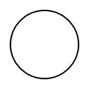

Circle Before |
Circle After |
Circle Anti-alias Before |
Circle Anti-alias After |
Star Before |
Star After |
Star Crop Before |
Star Crop After |
Circle Before Clear |
Circle After Clear |
Circle Before Tolerance |
Circle After Tolerance |
Circle ArrayBuffer Before |
Circle ArrayBuffer After |
Circle Close Tolerance Before |
Circle Close Tolerance After |
Circle Bounds Bug Test Before |
Circle Bounds Bug Test After |